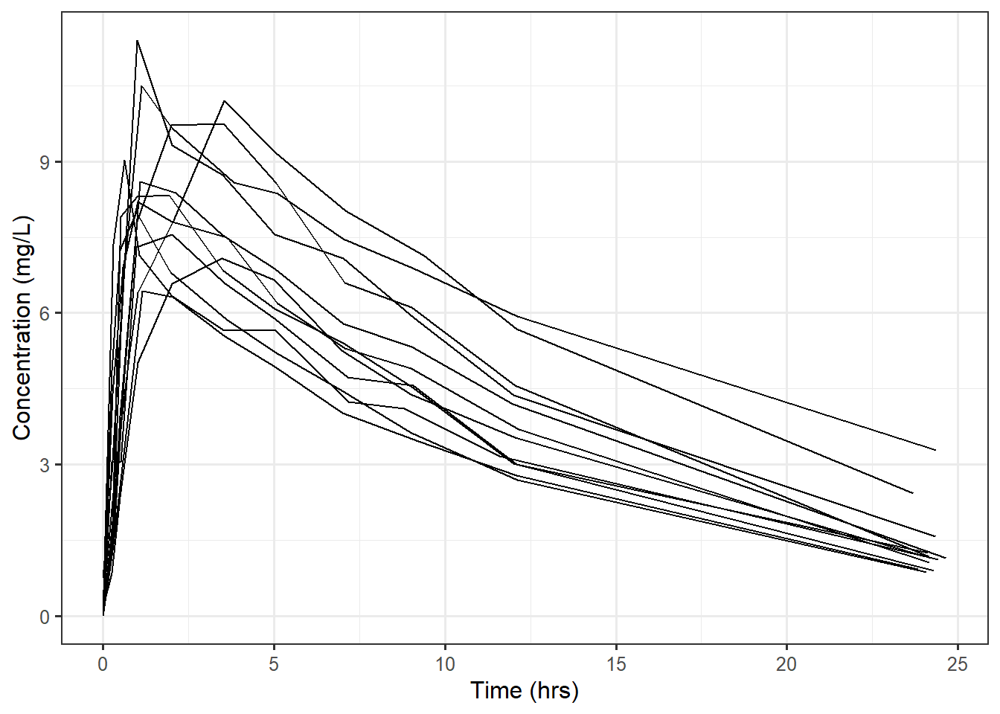

21 Nonlinear Models with Repeated Measures
Just as the linear model could be extended to account for repeated measures, nonlinear models can be extended as well. This is most commonly done through the mixed models framework (Chapter 14). In this chapter we provide some guidance for extending the nonlinear modeling framework for those interested. Readers may skip this chapter without loss of continuity.
Recall the Theophylline example (Example 16.1) we used to introduce nonlinear models at the beginning of this unit. Researchers were interested in studying the pharmacokinetics of the anti-asthmatic agent. In the original example, we considered blood samples taken from a single individual over a 24-hour period. In reality, the study enrolled 12 subjects, and each had blood samples taken over a 24-hour period (Figure 21.1).
The goal of the study, and the goal of most pharmacokinetics studies, is to understand the way the body processes the drug across the population. That is, researchers were interested in how the concentration-time profiles (through their parameters) varied across individuals. Since we have multiple measurements for each of the 12 subjects, we have repeated measures data.
Notice that the goal here is not to model the average trend in the population but to characterize the average (and even the variability) of in the parameters across individuals in the population. This is not the same as a confidence interval for the parameter (which would still be describing the average value); researchers want to know how different the parameters can be across individuals. This is the perfect set-up for a subject-specific modeling approach to the repeated measures.
Recall that within a subject, researchers believe the one-compartment model with first-order absorption is an appropriate scientific model. Therefore, our individual-level model has the form
\[(\text{Concentration})_{i,j} = \frac{k_{a,i} D_i}{\left(\beta_i/k_{e,i}\right)\left(k_{a,i} - k_{e,i}\right)} \left(e^{-k_{e,i} t_{i,j}} - e^{-k_{a,i} t_{i,j}}\right) + \varepsilon_{i,j},\]
where the parameters retain the same interpretations they had previously. While the form is held the same across all subjects, the specific values of the parameters can vary from one subject to another. The population-level model could have the form
\[ \begin{aligned} k_{a,i} &= k_{a} + b_{1,i} \\ k_{e,i} &= k_{e} + b_{2,i} \\ \beta_i &= \beta + b_{3,i}, \end{aligned} \]
where we assume each \(b_{k,i} \stackrel{\text{IID}}{\sim} N\left(0, \sigma^2_k\right)\) for each \(k\) and assume all terms are independent. That is, we are allowing each parameter to have a random effect that allows them to vary across the population. The parameter \(k_a\), for example, represents the average absorption rate across the population and \(\sigma_1^2\) would capture the variability of the absorption rate across the population.
Fitting this model to the data illustrated in Figure 21.1, we estimate that the average clearance rate in the population is 0.04. A confidence interval for the clearance rate is not of interest, as it would still be estimating the average clearance rate in the population. Based on the figure, the clearance rate differs across individuals; specifically, we estimate the clearance rate may vary between 0.02 and 0.06 among 95% of the population.
We could generalize the population-level model further to allow these parameters to depend upon other predictors (such as the weight of the subject).
These models are commonly fit (using specialized statistical software), but they continue to be the focus of research as there is not complete agreement on modeling constraints and how to relax conditions placed on the model. Unlike the linear case, it is not easy to determine the overall average trend given the subject-level model (though it is theoretically feasible). The nonlinearity makes several aspects of this problem quite challenging.